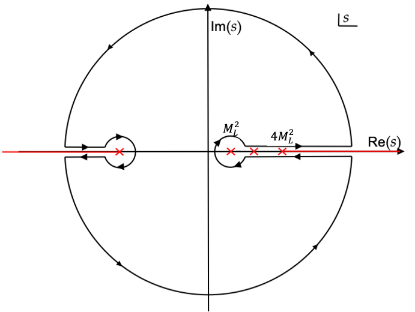
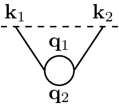
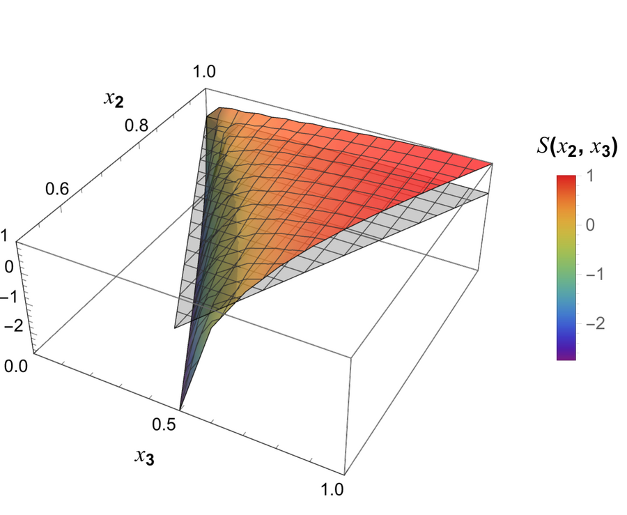
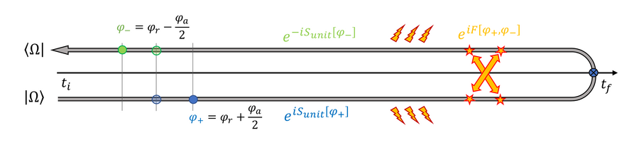
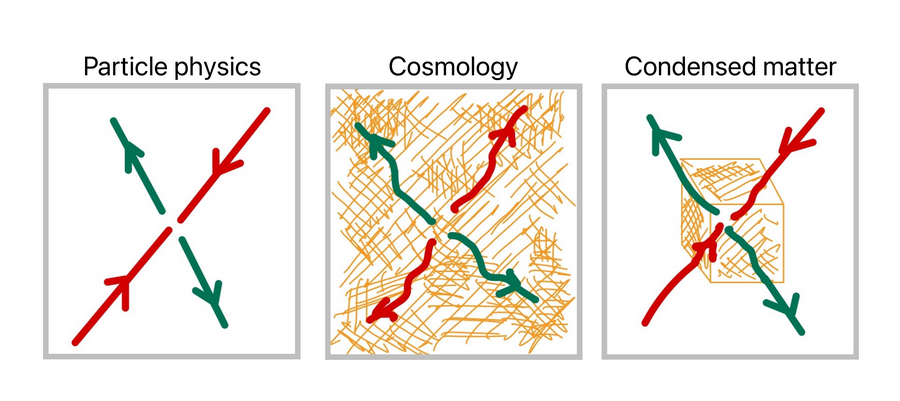
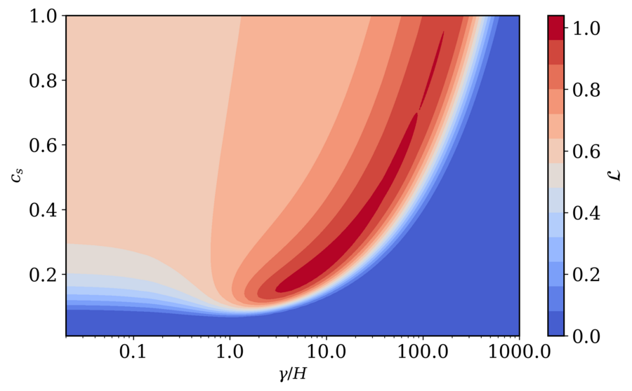
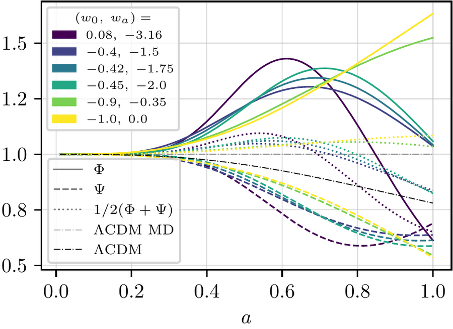

Research
My research develops open-system techniques to understand the universe's biggest unsolved puzzles — inflation, dark matter, and dark energy — which all share a common structure: each involves a spacetime-filling medium of unknown microphysics that we can only probe gravitationally. Building on the Schwinger-Keldysh path-integral formalism, I construct effective field theories that allow these "dark" sectors to dissipate energy and exchange information with an unspecified environment, rather than assuming they evolve unitarily. This open-system perspective has led to a general framework for open gravitational dynamics, concrete open effective field theories for inflation, electromagnetism, and dark energy, and new tools — including cutting rules and analyticity sum rules — for understanding the structure of cosmological correlators themselves. On the observational side, I confront these models directly with data: deriving the first model-independent bounds on early-universe dissipation from Planck, and identifying distinctive signatures of open dynamics in gravitational-wave propagation, the growth of structure, and the cosmic microwave background. Together, this work aims to turn the early universe's three biggest open questions into a single, testable research program.
Cosmological Correlators
The wavefunction of the universe encodes the correlators we observe in the CMB and large-scale structure, and much of my early work focused on understanding its mathematical structure. I study the analytic properties of wavefunction coefficients and the diagrammatic rules — generalizing the Cutkosky cutting rules and Feynman's tree theorem to cosmological spacetimes — that relate loop-level processes to simpler, tree-level building blocks. These results turn abstract consistency conditions like unitarity and causality into practical computational tools.

The Analytic Wavefunction
Agüí Salcedo, Lee, Melville, Pajer · JHEP 06 (2023) 020 · arXiv:2212.08009
This paper studies the analytic structure of wavefunction coefficients in Minkowski spacetime as a function of their kinematics, showing they are analytic everywhere in the complex energy plane except for singularities on the negative real axis, fixed to all loop orders by energy conservation. This structure yields new UV/IR sum rules — including ones sensitive to total-derivative interactions that flat-space scattering amplitudes cannot see.
- wavefunction
- analytic structure
- sum rules
- Landau analysis

The Cosmological Tree Theorem
Agüí Salcedo, Melville · JHEP 12 (2023) 076 · arXiv:2308.00680
Building on recent cutting rules for the wavefunction of the universe, this paper derives a cosmological analogue of Feynman's tree theorem: any loop diagram for cosmological correlators can be systematically rewritten as momentum integrals of simpler tree-level diagrams. Combined with the Bunch–Davies condition, the same rules fix tree-level exchange diagrams entirely in terms of contact diagrams, removing the need to ever perform nested time integrals.
- cutting rules
- tree theorem
- loop diagrams
- cosmological correlators
Open Systems
Most early-universe and dark-sector physics is sensitive to interactions with an environment we cannot directly observe. I use open quantum system techniques — adapted from condensed matter and particle physics — to build effective field theories that consistently include dissipation and stochastic noise. This program runs from the inflationary Goldstone boson, through gauge theories of light propagating in a medium, up to a fully gravitational open effective field theory that unifies these examples and extends to gravitational-wave propagation.

The Open Effective Field Theory of Inflation
Agüí Salcedo, Colas, Pajer · JHEP 10 (2024) 248 · arXiv:2404.15416
Since we have no direct information about the environment experienced by primordial perturbations, this paper develops an open effective field theory for the inflationary Goldstone boson, allowing for dissipative, non-unitary evolution organized as a derivative expansion. Its smoking-gun signature is an enhanced but finite bispectrum near the folded configuration — a distinctive shape that standard, unitary inflation cannot produce.
- open EFT
- inflation
- dissipation
- non-Gaussianity

An Open Effective Field Theory for Light in a Medium
Agüí Salcedo, Colas, Pajer · JHEP 03 (2025) 138 · arXiv:2412.12299
As a step toward open quantum gravity, this paper builds the most general open effective field theory for electromagnetism interacting with an unknown medium, working within the Schwinger-Keldysh formalism. It shows that gauge invariance survives dissipation, but in a deformed form, and that this in turn imposes non-trivial, previously unrecognized constraints on the theory's noise fluctuations.
- gauge theory
- dissipation
- electromagnetism
- Schwinger-Keldysh

An Open System Approach to Gravity
Agüí Salcedo, Colas, Dufner, Pajer · JHEP 02 (2026) 241 · arXiv:2507.03103
Inflation, dark matter, and dark energy all involve spacetime-filling media of unknown microphysics that we can only probe gravitationally. This paper builds a general open-system framework for gravity itself, using general relativity and the Schwinger-Keldysh formalism to compute the gravitational density matrix in perturbation theory. As applications, it recovers the Open EFT of Inflation in the decoupling limit and derives the most general dissipative corrections to gravitational-wave propagation, finding that gravitational birefringence is dissipative at leading order.
- open gravity
- Schwinger-Keldysh
- gravitational waves
- diffeomorphism invariance
Cosmological Probes
Ultimately, these open-system frameworks need to face real data. I derive observational predictions and constraints for two concrete realizations: a dissipative model of dark energy confronted with DESI baryon acoustic oscillation measurements, and a dissipative model of inflation confronted with Planck CMB data. Both yield distinctive, testable signatures — from modified gravitational-wave luminosity distances to folded non-Gaussianity — that distinguish open dynamics from the standard minimal scenarios.

Primordial Non-Gaussianity Constraints on Dissipative Inflation
Agüí Salcedo, Colas, Suman, Zhang, Fergusson, Shellard · arXiv:2603.13473
Using the Open EFT of Inflation, this paper derives the first model-independent observational bounds on early-universe dissipation by confronting its predicted non-Gaussian signatures with Planck CMB data via the Modal bispectrum pipeline. The analysis bounds the dissipation scale to γ ≤ 384 H and the sound speed to cs ≥ 0.38 at 95% confidence, revealing a clear degeneracy between the two parameters.
- dissipative inflation
- Planck CMB
- non-Gaussianity
- bispectrum constraints

Phenomenology of an Open Effective Field Theory of Dark Energy
Agüí Salcedo, Colas, Dufner, Pajer · arXiv:2603.12321
Since dark energy is only ever probed gravitationally, this paper studies a minimal open-system model in which it dissipates energy into an unknown environment. Fit to recent DESI BAO measurements, the model predicts a correlated, testable package of signatures relative to ΛCDM: suppressed gravitational-wave luminosity distances, a modified gravitational slip in the Bardeen potentials, and enhanced structure growth at low redshift.
- dark energy
- open EFT
- DESI BAO
- gravitational slip